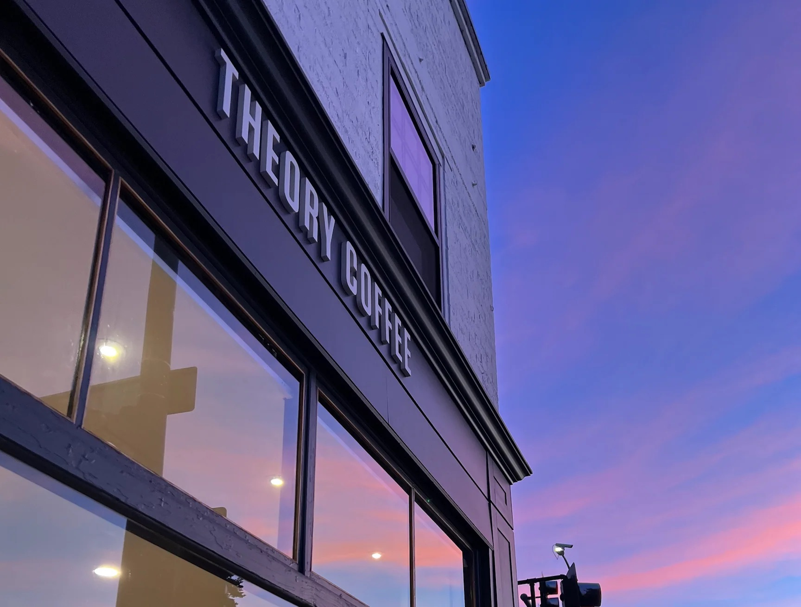
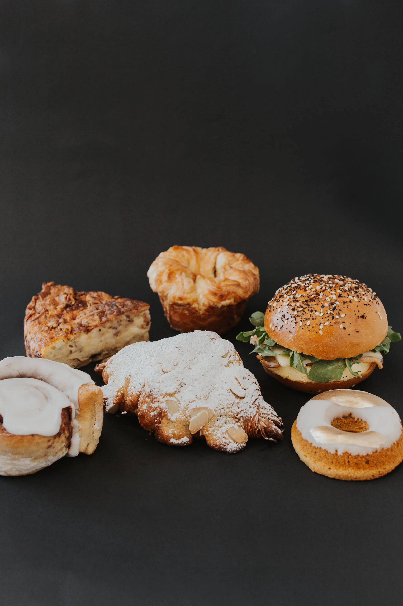

How a kitchen experiment became one of the top ten roasters in the United States.
Sam LaRobardiere didn't set out to build a coffee company. He set out to roast a better bean. The first batches happened in a home kitchen. Then a backyard barbecue grill. Then a farmers market table in Redding, California.
The response was immediate. People kept coming back. Not because of branding or marketing. Because the coffee was undeniable.
The business was never a plan. It was an obsession that other people believed in.
Theory won a Golden Bean Gold Medal in its first year of competition. Then came the Good Food Awards. Then Food & Wine named them one of the 100 best cafés in America. Twitter chose Theory as their sole coffee provider after a blind tasting at SF headquarters.
The awards didn't change the process. They confirmed it.

Today Theory operates four locations across Northern California, runs weekly cuppings, sources directly from farms, and maintains a wholesale program that puts their coffee in kitchens and offices nationwide. The founding instinct never left.
Theory speaks the way it roasts: with intention and without excess. The brand voice is direct, knowledgeable, and grounded. It doesn't oversell. It doesn't need to. The product does the work. The words just make the introduction.

Theory doesn't bake. Eden does. Fresh pastries delivered daily to every café. The partnership is visible, intentional, and non-negotiable. If it's in the case, it's from Eden. No exceptions.
Direct relationships with farmers. A wholesale program built on trust, not volume. Theory grows by making the people around it better.